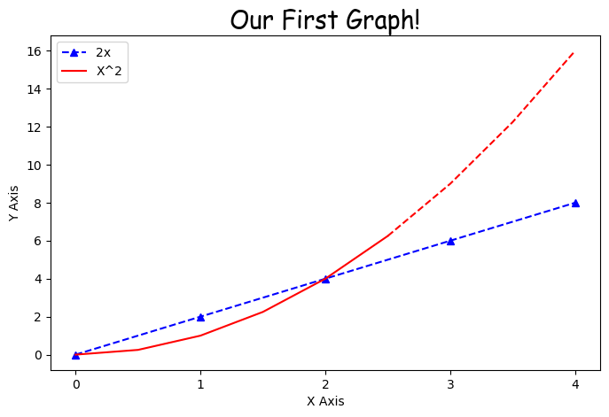
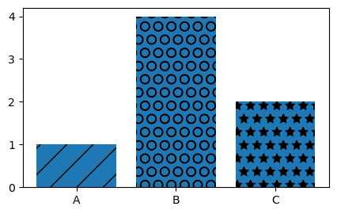
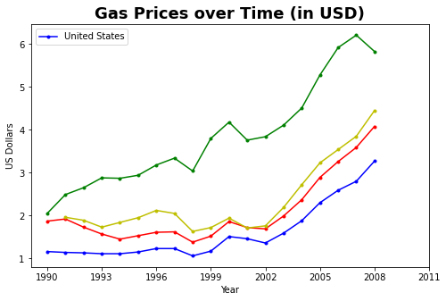
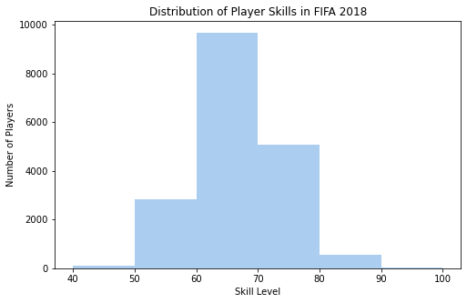
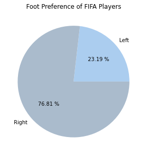
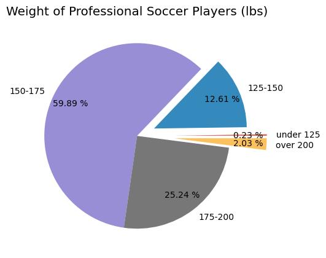
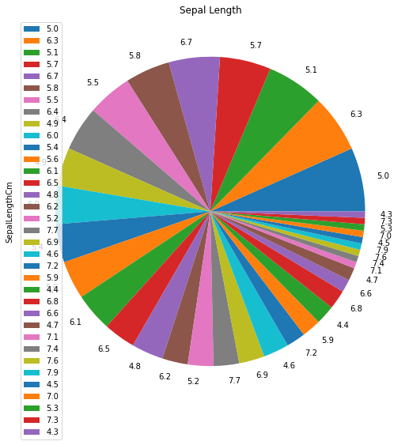
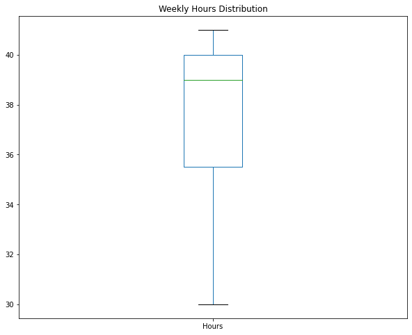

Matplotlib#
Matplotlib is a Python 2D plotting library that produces high-quality charts and figures, which helps us visualize extensive data to understand better. Pandas is a handy and useful data-structure tool for analyzing large and complex data.
Load Necessary Libraries
import matplotlib.pyplot as plt
import numpy as np
import pandas as pd
Basic Graph#
x = [0,1,2,3,4]
y = [0,2,4,6,8]
# Resize your Graph (dpi specifies pixels per inch. When saving probably should use 300 if possible)
plt.figure(figsize=(8,5), dpi=100)
# Line 1
# Keyword Argument Notation
#plt.plot(x,y, label='2x', color='red', linewidth=2, marker='.', linestyle='--', markersize=10, markeredgecolor='blue')
# Shorthand notation
# fmt = '[color][marker][line]'
plt.plot(x,y, 'b^--', label='2x')
## Line 2
# select interval we want to plot points at
x2 = np.arange(0,4.5,0.5)
# Plot part of the graph as line
plt.plot(x2[:6], x2[:6]**2, 'r', label='X^2')
# Plot remainder of graph as a dot
plt.plot(x2[5:], x2[5:]**2, 'r--')
# Add a title (specify font parameters with fontdict)
plt.title('Our First Graph!', fontdict={'fontname': 'Comic Sans MS', 'fontsize': 20})
# X and Y labels
plt.xlabel('X Axis')
plt.ylabel('Y Axis')
# X, Y axis Tickmarks (scale of your graph)
plt.xticks([0,1,2,3,4,])
#plt.yticks([0,2,4,6,8,10])
# Add a legend
plt.legend()
# Save figure (dpi 300 is good when saving so graph has high resolution)
plt.savefig('mygraph.png', dpi=300)
# Show plot
plt.show()
The line plot graph should look like this:
{kind=link}
Bar Chart#
labels = ['A', 'B', 'C']
values = [1,4,2]
plt.figure(figsize=(5,3), dpi=100)
bars = plt.bar(labels, values)
patterns = ['/', 'O', '*']
for bar in bars:
bar.set_hatch(patterns.pop(0))
plt.savefig('barchart.png', dpi=300)
plt.show()
The line bar chart should look like this:
{kind=link}
Real World Examples#
Download datasets:
Line Graph#
gas = pd.read_csv('gas_prices.csv')
plt.figure(figsize=(8,5))
plt.title('Gas Prices over Time (in USD)', fontdict={'fontweight':'bold', 'fontsize': 18})
plt.plot(gas.Year, gas.USA, 'b.-', label='United States')
plt.plot(gas.Year, gas.Canada, 'r.-')
plt.plot(gas.Year, gas['South Korea'], 'g.-')
plt.plot(gas.Year, gas.Australia, 'y.-')
# Another Way to plot many values!
# countries_to_look_at = ['Australia', 'USA', 'Canada', 'South Korea']
# for country in gas:
# if country in countries_to_look_at:
# plt.plot(gas.Year, gas[country], marker='.')
plt.xticks(gas.Year[::3].tolist()+[2011])
plt.xlabel('Year')
plt.ylabel('US Dollars')
plt.legend()
plt.savefig('Gas_price_figure.png', dpi=300)
plt.show()
The line graph should look like this:
{kind=link}
Load Fifa Data#
fifa = pd.read_csv('fifa_data.csv')
fifa.head(5)
| Unnamed: 0 | ID | Name | Age | Photo | Nationality | Flag | Overall | Potential | Club | ... | Composure | Marking | StandingTackle | SlidingTackle | GKDiving | GKHandling | GKKicking | GKPositioning | GKReflexes | Release Clause | |
|---|---|---|---|---|---|---|---|---|---|---|---|---|---|---|---|---|---|---|---|---|---|
| 0 | 0 | 158023 | L. Messi | 31 | https://cdn.sofifa.org/players/4/19/158023.png | Argentina | https://cdn.sofifa.org/flags/52.png | 94 | 94 | FC Barcelona | ... | 96.0 | 33.0 | 28.0 | 26.0 | 6.0 | 11.0 | 15.0 | 14.0 | 8.0 | €226.5M |
| 1 | 1 | 20801 | Cristiano Ronaldo | 33 | https://cdn.sofifa.org/players/4/19/20801.png | Portugal | https://cdn.sofifa.org/flags/38.png | 94 | 94 | Juventus | ... | 95.0 | 28.0 | 31.0 | 23.0 | 7.0 | 11.0 | 15.0 | 14.0 | 11.0 | €127.1M |
| 2 | 2 | 190871 | Neymar Jr | 26 | https://cdn.sofifa.org/players/4/19/190871.png | Brazil | https://cdn.sofifa.org/flags/54.png | 92 | 93 | Paris Saint-Germain | ... | 94.0 | 27.0 | 24.0 | 33.0 | 9.0 | 9.0 | 15.0 | 15.0 | 11.0 | €228.1M |
| 3 | 3 | 193080 | De Gea | 27 | https://cdn.sofifa.org/players/4/19/193080.png | Spain | https://cdn.sofifa.org/flags/45.png | 91 | 93 | Manchester United | ... | 68.0 | 15.0 | 21.0 | 13.0 | 90.0 | 85.0 | 87.0 | 88.0 | 94.0 | €138.6M |
| 4 | 4 | 192985 | K. De Bruyne | 27 | https://cdn.sofifa.org/players/4/19/192985.png | Belgium | https://cdn.sofifa.org/flags/7.png | 91 | 92 | Manchester City | ... | 88.0 | 68.0 | 58.0 | 51.0 | 15.0 | 13.0 | 5.0 | 10.0 | 13.0 | €196.4M |
5 rows × 89 columns
Histogram#
bins = [40,50,60,70,80,90,100]
plt.figure(figsize=(8,5))
plt.hist(fifa.Overall, bins=bins, color='#abcdef')
plt.xticks(bins)
plt.ylabel('Number of Players')
plt.xlabel('Skill Level')
plt.title('Distribution of Player Skills in FIFA 2018')
plt.savefig('histogram.png', dpi=300)
plt.show()
The histogram should look like this:
{kind=link}
Pie Chart#
Pie Chart #1#
left = fifa.loc[fifa['Preferred Foot'] == 'Left'].count()[0]
right = fifa.loc[fifa['Preferred Foot'] == 'Right'].count()[0]
plt.figure(figsize=(8,5))
labels = ['Left', 'Right']
colors = ['#abcdef', '#aabbcc']
plt.pie([left, right], labels = labels, colors=colors, autopct='%.2f %%')
plt.title('Foot Preference of FIFA Players')
plt.show()
The piechart should look like this:
{kind=link}
Pie Chart #2#
plt.figure(figsize=(8,5), dpi=100)
plt.style.use('ggplot')
fifa.Weight = [int(x.strip('lbs')) if type(x)==str else x for x in fifa.Weight]
light = fifa.loc[fifa.Weight < 125].count()[0]
light_medium = fifa[(fifa.Weight >= 125) & (fifa.Weight < 150)].count()[0]
medium = fifa[(fifa.Weight >= 150) & (fifa.Weight < 175)].count()[0]
medium_heavy = fifa[(fifa.Weight >= 175) & (fifa.Weight < 200)].count()[0]
heavy = fifa[fifa.Weight >= 200].count()[0]
weights = [light,light_medium, medium, medium_heavy, heavy]
label = ['under 125', '125-150', '150-175', '175-200', 'over 200']
explode = (.4,.2,0,0,.4)
plt.title('Weight of Professional Soccer Players (lbs)')
plt.pie(weights, labels=label, explode=explode, pctdistance=0.8,autopct='%.2f %%')
plt.show()
The piechart should look like this:
{kind=link}
Pie Chart #3#
import pandas as pd
data = pd.read_csv("iris_data.csv")
data.head()
| Id | SepalLengthCm | SepalWidthCm | PetalLengthCm | PetalWidthCm | Species | |
|---|---|---|---|---|---|---|
| 0 | 1 | 5.1 | 3.5 | 1.4 | 0.2 | Iris-setosa |
| 1 | 2 | 4.9 | 3.0 | 1.4 | 0.2 | Iris-setosa |
| 2 | 3 | 4.7 | 3.2 | 1.3 | 0.2 | Iris-setosa |
| 3 | 4 | 4.6 | 3.1 | 1.5 | 0.2 | Iris-setosa |
| 4 | 5 | 5.0 | 3.6 | 1.4 | 0.2 | Iris-setosa |
SepalLength = data['SepalLengthCm'].value_counts()
# Plot a pie chart
%matplotlib inline
from matplotlib import pyplot as plt
SepalLength.plot(kind='pie', title='Sepal Length', figsize=(9,9))
plt.legend()
plt.show()
The piechart should look like this:
{kind=link}
Box and Whiskers Chart#
A box and whisker plot(box plot) displays the five-number summary of a set of data. The five-number summary is the minimum, first quartile, median, third quartile, and maximum.
Box plot #1#
plt.figure(figsize=(5,8), dpi=100)
plt.style.use('default')
barcelona = fifa.loc[fifa.Club == "FC Barcelona"]['Overall']
madrid = fifa.loc[fifa.Club == "Real Madrid"]['Overall']
revs = fifa.loc[fifa.Club == "New England Revolution"]['Overall']
#bp = plt.boxplot([barcelona, madrid, revs], labels=['a','b','c'], boxprops=dict(facecolor='red'))
bp = plt.boxplot([barcelona, madrid, revs], labels=['FC Barcelona','Real Madrid','NE Revolution'], patch_artist=True, medianprops={'linewidth': 2})
plt.title('Professional Soccer Team Comparison')
plt.ylabel('FIFA Overall Rating')
for box in bp['boxes']:
# change outline color
box.set(color='#4286f4', linewidth=2)
# change fill color
box.set(facecolor = '#e0e0e0' )
# change hatch
#box.set(hatch = '/')
plt.show()
The box plot should look like this:
Box plot #2#
#cateating data
import pandas as pd
df = pd.DataFrame({'Name': ['John', 'Rad', 'Var', 'Mathew', 'Alina', 'Lee', 'Rogers'],
'Salary':[60000,64000,60000,289000,66000,50000,60000],
'Hours':[41,40,36,30,35,39,40],
'Grade':[50,50,46,95,50,5,57]})
print(df)
Name Salary Hours Grade
0 John 60000 41 50
1 Rad 64000 40 50
2 Var 60000 36 46
3 Mathew 289000 30 95
4 Alina 66000 35 50
5 Lee 50000 39 5
6 Rogers 60000 40 57
# Quartiles of Hours
print(df['Hours'].quantile([0.25, 0.5, 0.75]))
0.25 35.5
0.50 39.0
0.75 40.0
Name: Hours, dtype: float64
# Plot a box-whisker chart
import matplotlib.pyplot as plt
df['Hours'].plot(kind='box', title='Weekly Hours Distribution', figsize=(10,8))
plt.show()
The box plot should look like this:
{kind=link}
# Quartiles of Salary
print(df['Salary'].quantile([0.25, 0.5, 0.75]))
0.25 60000.0
0.50 60000.0
0.75 65000.0
Name: Salary, dtype: float64
# Plot a box-whisker chart
df['Salary'].plot(kind='box', title='Salary Distribution', figsize=(10,8))
plt.show()
The box plot should look like this: